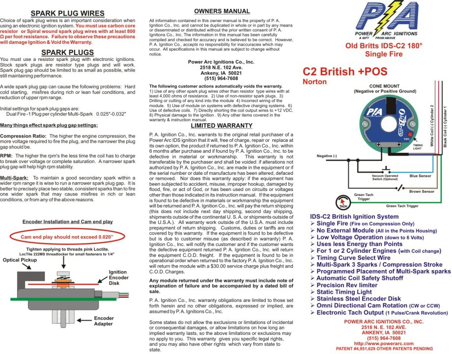
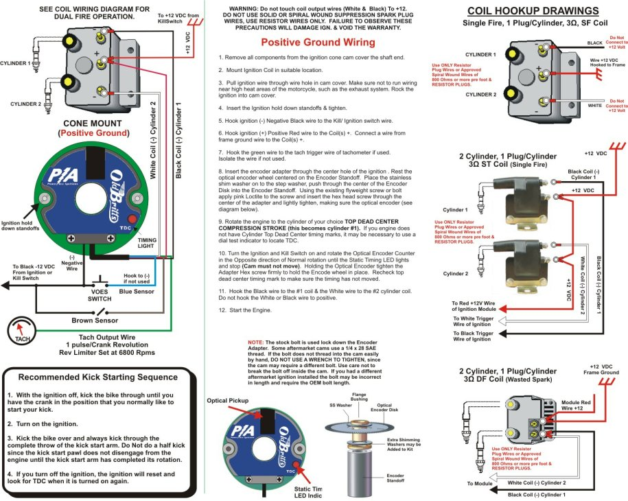
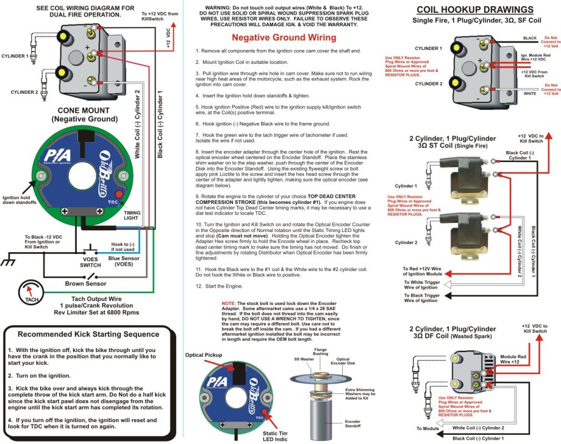
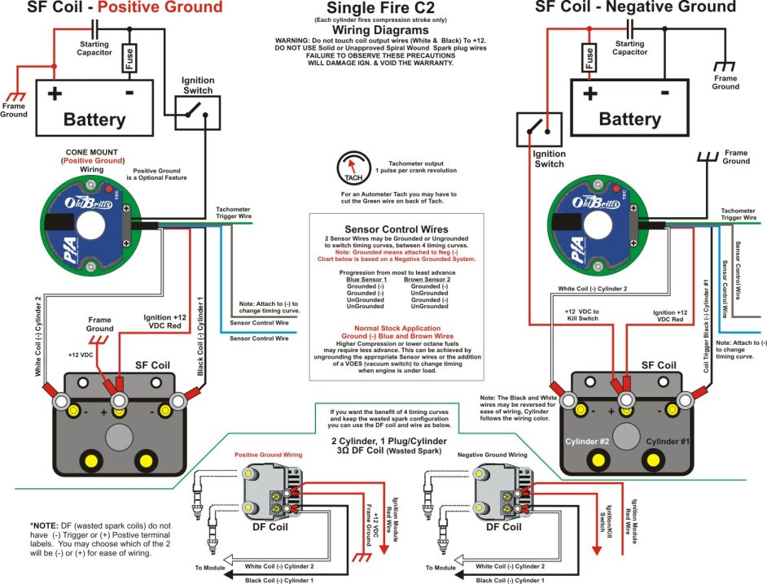
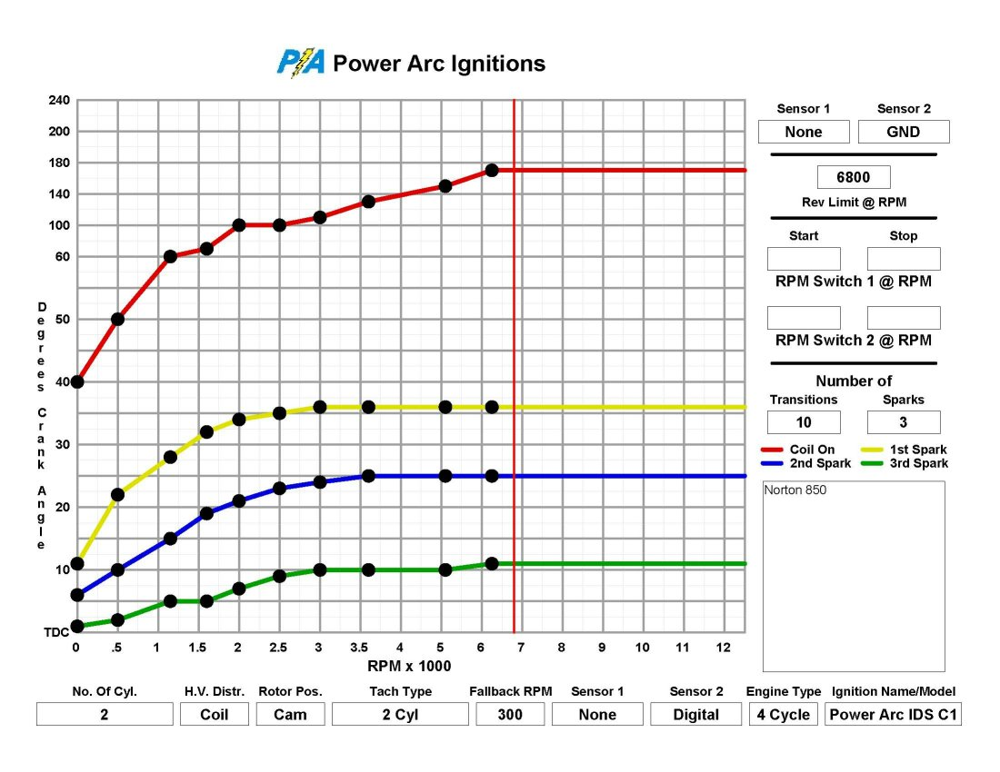

Beside our standard two map Commando ignition we can now offer additional Power Arc ignitions that have additional options. The list of options now available are:
- Four advance map ignitions.
- Positive/Negative ground options.
- Single fire option. This will fire each cylinder separately and requires two coils. This is only available in the four map version.
- Program adapter on the ignition unit allowing the ignition to be programmed on the bike. All Power Arc ignitions are programmable, but without this option the unit needs to be removed from the bike.
- 90 Degree crank option.
We will be putting more information on this page, but for now we are picturing the options and listing the prices. If more information is needed, please E-mail or call.
The Power Arc manual for the four advance map ignition that they call the C2 ignition.




For basic installation information of the Commando ignition see Complete Power Arc Commando Ignition System.
Each Power Arc Map (advance curve) has four parts.
- A curve for turning on the coil.
- A curve for the first spark.
- A curve for the second spark.
- A curve for the third spark.

This page was written and designed by F. H. Eaton & Associates if you have any questions or comments please contact us at info@fheaton.com